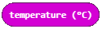

Projekat zadatak – Čuvar kuća¶
Alarmi su uređaji koji putem elektronske mreže komuniciraju sa centralnom kontrolnom jedinicom i šalju signale o eventualnim pokretima i promenama, koje detektuju putem senzora.
Tipičan kućni alarmni sistem sadrži sledeće komponente:
Kontrolnu tablu, koja je zapravo centralna kontrolna jedinica alarmnog sistema
Senzore na vratima, prozorima ili nekim delovima nameštaja
Senzore pokreta, unutrašnje i spoljašnje
Veoma bučnu sirenu ili alarm.
Princip rada je veoma jednostavan: alarmni sistemi osiguravaju ulazne tačke, odnosno mesta koje omogućavaju pristup kući, stanu ili radnom prostoru, senzorima koji komuniciraju sa glavnom kontrolnom jedinicom. Senzori se obično nalaze na vratima ili prozorima, ali i na drugim otvorima koji omogućavaju pristup unutra.
Uređaj Čuvar kuća (Alarm) potrebno je da detektuje pokrete, kao i promenu temperature i osvetljenja u prostoriji. Ako se vrata otvore, a poraste temperatura u prostoriji ili se poveća intenzitet svetlosti uređaj će se oglasiti.
Za izradu uređaja Čuvar kuća (Alarm) potrebno je:
3 Micro:bit
Samolepljiva traka
Zvučnik ili slušalice
Krokodilke
Za izradu uređaja Čuvar kuća (Alarm) potrebno je najpre uraditi fizički uređaj koji se sastoji od Micro:bit-a koji će igrati ulogu senzora koji detektuje pokrete, promenu temperature i osvetljenja u prostoriji, i Micro:bit koji će imati ulogu da se oglasi kada nastanu promene u prostoriji (oko 10 metara od senzora mora da bude postavljen Micro:bit na kome je povezan zvučnik).
Sada kada smo napravili uređaj Čuvar kuća (Alarm) potrebno je napraviti programe za svaki od Micro:bit.
Potrebno je programirati zasebno sva tri Micro:bit-a:
1. Jedan ima ulogu da detektuje pokrete. 2. Drugi se koristi da detektuje promenu temperature ili osvetljenja. 3. Treći se koristi za puštanje zvuka kada se detektuje pokret, promena temperature ili promena osvetljenja u prostoriji.
Korak 1
Idite na https://makecode.microbit.org/.
Najpre ćemo programirati Micro:bit pomoću koga ćemo detektovati pokrete.
Korak 2
Kreirajte novi projekat.
Želimo sada da isprogramiramo detekciju pokreta, tačnije želimo da pomoću Micro:bit-a registrujemo pokret.
Kada želimo da uspostavimo komunikaciju (da iskoristimo radio komunukaciju) između Micro:bit-ova, svi uključeni Micro:bit-ovi moraju da pripadaju istoj grupi, odnosno da koriste isti ID grupe.
Korak 3
Kreiranjem ID grupe, u stvari kreira se prostor u kome će komunicirati uređaji.
Da bismo kreirali ID grupu iz kategorije  prevlačimo blok
prevlačimo blok  blok
blok  . U prostor
. U prostor  unosimo željeni broj za ID grupe. To može biti bilo koji broj. Mi ćemo ostaviti da to bude 1. Na taj način smo kreirali grupu sa ID 1 u kojoj će komunicirati svi Micro:bit-ovi.
unosimo željeni broj za ID grupe. To može biti bilo koji broj. Mi ćemo ostaviti da to bude 1. Na taj način smo kreirali grupu sa ID 1 u kojoj će komunicirati svi Micro:bit-ovi.
Deo koda kojim se kreira grupa za komunikaciju:

Korak 4
U blok  , nalazi se u kategoriji , prevuci blok
, nalazi se u kategoriji , prevuci blok  iz kategorije
iz kategorije  .
.
U delu za uslov prevucite blok  (nalazi se u kategoriji
(nalazi se u kategoriji  ).
).
Iz padajuće liste bloka :

izaberite opciju  . Ova opcija registruje pokrete.
. Ova opcija registruje pokrete.

Na osnovu postavke problema, kada je registrovan pokret (odnosno u našem slučaju kada je uslov ispunjen), Micro:bit-u šalje neku vrednost korišćenjem bloka  .
.
U tekst polje  unosimo broj 5 (može da se unese bilo koja vrednost). Da bi senzor reagovao, tačnije detektovao pokrete postavićemo da je za to potreban određeni vremenski period, neka to bude 3 sekunde (ili 3000 milisekundi). Za to ćemo koristiti blok
unosimo broj 5 (može da se unese bilo koja vrednost). Da bi senzor reagovao, tačnije detektovao pokrete postavićemo da je za to potreban određeni vremenski period, neka to bude 3 sekunde (ili 3000 milisekundi). Za to ćemo koristiti blok  iz kategorije . U polje
iz kategorije . U polje  unosimo 3000 ms koje će biti vreme za koje senzor odreaguje na promenu koja se desila.
unosimo 3000 ms koje će biti vreme za koje senzor odreaguje na promenu koja se desila.

Korak 5
Klikom na dugme  ili dugme
ili dugme  preuzmite .hex fajl na vaš računar. Prevlačenjem fajla na Micro:bit on je spreman za rad.
preuzmite .hex fajl na vaš računar. Prevlačenjem fajla na Micro:bit on je spreman za rad.
Korak 6
Sada je potrebno isprogramirati Micro:bit da detektuje promenu temperature i intenziteta osvetljenja i da šalje te informacije ka Micro:bit-u koji će se zvučno oglasiti. Da bi Micro:bit-ovi komunicirali potrebno je da pripadaju istoj ID grupi.
Kreirana je grupu sa ID 1 u kojoj će komunicirati svi Micro:bit-ovi:
U bloku prevuci blok iz kategorije . U delu za uslov treba da prevučemo blokove kojim se definišu uslovi da je temperatura veća od 30, ili da je intenzitet osvetljenja veći od 150.
Uslovi mogu biti složeni (nastaju povezivanjem prostih uslova).
U našem slučaju prosti uslovi su da je temperatura veća od 30, ili da je intenzitet osvetljenja veći od 140.
Proste uslove definišemo blokovima  .
.
U našem slučaju uslove definišemo na sledeći način:
temperatura  veća od 30:
 .
.intenzitet osvetljenja
 veći od 150:
veći od 150:  .
.
Za povezivanje prostih uslova koristiš logičke operatore (I (engl. AND), ILI (engl. OR), NE (engl. NOT)).
U MakeCode-u logički operatori su predstavljeni na sledeći način:
 - Povezuje dva uslova, i kao rezultat vraća Tačno samo ako su oba uslova Tačna.
- Povezuje dva uslova, i kao rezultat vraća Tačno samo ako su oba uslova Tačna.
 - Povezuje dva uslova, i kao rezultat vraća Tačno ako je bar jedan uslov Tačan.
- Povezuje dva uslova, i kao rezultat vraća Tačno ako je bar jedan uslov Tačan.
 - Stavlja se ispred jednog uslova, i kao rezultat vraća Tačno u slučaju da uslov nije zadovoljen.
- Stavlja se ispred jednog uslova, i kao rezultat vraća Tačno u slučaju da uslov nije zadovoljen.
Uslov kojim se proverava da li je došlo do promene temperature ili intenziteta osvetljenja definišemo blokom:
Izgled uslovnog bloka:

Na osnovu postavke zadatka, kada je registrovan promena temperature ili osvetljenja, Micro:bit-u šalje neku vrednost korišćenjem bloka . U tekst polje unosimo broj 10 (može da se unese bilo koja vrednost).
Da bi senzor reagovao, tačnije detektovao pokrete postavićemo da je za to potreban određeni vremenski period, neka to bude 3 sekunde (ili 3000 milisekundi). Za to ćemo koristiti blok iz kategorije . U polje unosimo 3000 ms koje će biti vreme za koje senzor odreaguje na promenu koja se desila.
Izgled programa kada je detektovana promena temperature ili osvetljenja:

Korak 7
Klikom na dugme ili dugme preuzmite .hex fajl na vaš računar. Prevlačenjem fajla na Micro:bit on je spreman za rad.
Korak 8
I na kraju, potrebno je isprogramirati poslednji treći Micro:bit (oglašivač) da kada primi informacije od druga dva Micro:bit-a se oglasi jakim zvukom.
Kreiramo grupu sa ID 1:
Sledeći korak je da ovaj Micro:bit primi informaciju (u našem slučaju broj) na osnovu koje će da „odreaguje“ tako što će se čuti zvuk. Za to ćemo iz kategorije prevući blok:
U njega ćemo prevući blok . U delu za uslov treba da prevučemo uslov kojim se proverava prijem brojeva (5, 10) od druga dva Micro:bit-a.
Korišćenjem znaka  uvodimo još jedan uslov. U grani gde je uslov i uslov
uvodimo još jedan uslov. U grani gde je uslov i uslov  prevlačimo blok
prevlačimo blok  (iz padajuće liste biramo melodiju
(iz padajuće liste biramo melodiju ringtone) iz kategorije  kojim se reprodukuje zvuk.
Pored ovog bloka dodajemo i vremenski interval od jedne sekunde.
kojim se reprodukuje zvuk.
Pored ovog bloka dodajemo i vremenski interval od jedne sekunde.
Konačan izgled koda:

Napomena: Da bi zvuk mogao da se reprodukuje Micro:bit mora da bude povezan sa zvučnicima ili slušalicama na sledeći način:

Možete uporediti rešenje zadatka:
Korak 9
Klikom na dugme  ili dugme preuzmite .hex fajl na vaš računar. Prevlačenjem fajla na Micro:bit on je spreman za rad.
ili dugme preuzmite .hex fajl na vaš računar. Prevlačenjem fajla na Micro:bit on je spreman za rad.